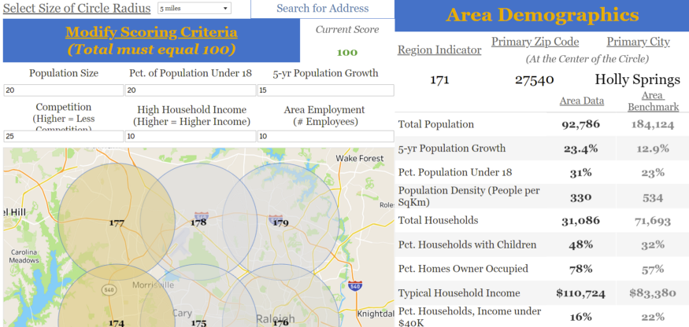
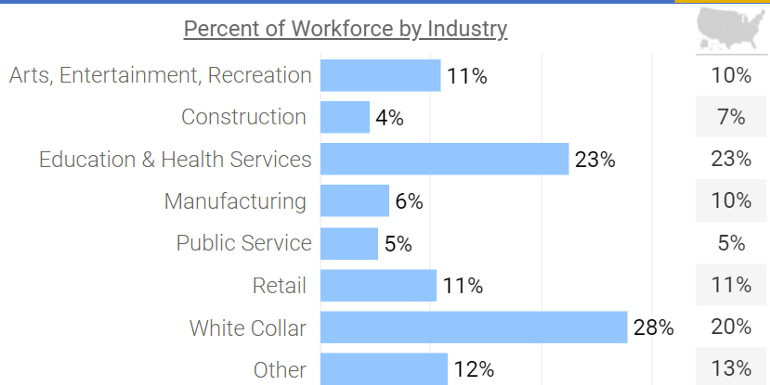
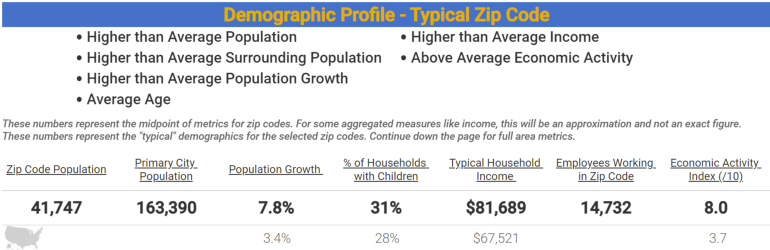

Location Selection
Misc
- Customer research, market expertise & experience, and competitor location analysis can all help inform the important criteria for your business
- Tool to calculate population density within a certain radius of a location
- Might be more useful to aggregate smaller geographies into overlapping circular areas to compare candidates
- Would have to decide how to handle geographies that are only partially enclosed in a circlular area
- Use a percentage?
- Include the whole thing?
- Would have to decide how to handle geographies that are only partially enclosed in a circlular area
Factors
- Understanding of the demographic or economic factors that must be in place to be successful
- Examples of questions
- Do you need a large population?
- High income population?
- High presence of certain age brackets?
- Do you rely on office worker foot traffic?
- Is the presence of certain business types important (restaurants, healthcare facilities)?
- Non-data factors
- Appropriate accessibility (car traffic/foot traffic, street frontage)
- Signage
- Availability and size of space
- Cost/affordability
Location Profiles
These are created for existing stores and locations or potential new stores
Example: Workforce and Demographic 
Other potential variables
- Customer median driving distance
- May also inform on the correct census geography to use
- Distance_to highways, business district, etc.
- Customer median driving distance
Analysis
- Use thresholds for any profile variables to help narrow the group of potential candidate locations to a managable number
- Might be useful to fit a decision tree to develop rules to use as thresholds
- Example
- Zip Code Population of 25,000+
- May want to use census geographies other than zip code
- City Population of 150,000+
- Growing Population
- Household Income of $75,000+
- High percentage of the population in the workforce
- High economic activity
- Primary industry of employment in White Collar
- Percentage millennial population
- Restaurant density
- Zip Code Population of 25,000+
- Score candidate locations
- Create weights for important profile variables and then calculate scores for each candidate location
- Methods for creating weights
- Wing it with domain knowledge
- Coefficients from a regularized regression of KPI ~ standardized_profile_vars could be used as weights
- Or feature importance, shapely values, etc. from tree model
- Correlation or association statistics as weights
- Methods for creating weights
- Order scores highest to lowest
- If more than one location is considered, then group_by a suitably-sized geography
- Create weights for important profile variables and then calculate scores for each candidate location
- Cluster candidate location profiles with current successful stores
- Candidate locations that are in the same cluster as your stores are the ones that should be considered
- Prominent features of the cluster(s) may indicate which profile variables are more important than others
- Take top-n candidates and dig deeper:
- Competitor analysis
- Example questions
- How many competitors exist is location?
- Where are they located?
- How satisfied are consumers with the options that exist today?
- Which competitors are most popular, suggesting we may want to look in other areas?
- e.g. Google Map, Yelp, etc. reviews of competitors at this location
- Example questions
- Mapping may illuminate other considerations
- e.g. One location has large swaths of uninhabitable land — is there enough population density for us to be successful?
- How close are these locations to your other stores?
- Could one leach customers from the other?
- Examine profiles of final candidates
- What are the primary differences?
- What are the best features?
- Competitor analysis